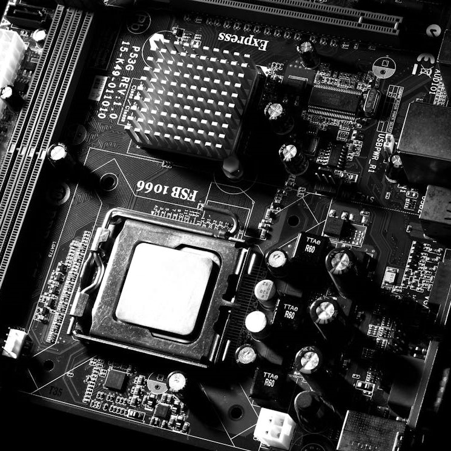

<!DOCTYPE html>
<html lang="en"></html>
<head>
    <meta charset="UTF-8">
    <meta name="viewport" content="width=device-width, initial-scale=1.0">
    <title>Document</title>
    <link rel="stylesheet" href="style2.css">
</head>
<body>
    
  <div id="wrapper">

        <header>

          <a href="index.html"> 
            <button type="button" class="block">  
              
            </button>
          </a>

        </header>
        <nav>
        <h2>

            <div class="dropdown">
              <button class="dropbtn">Meny</button>
              <div class="dropdown-content">
                <a href="chassi.html">Chassi</a>
                <a href="cpu.html">CPU</a>
                <a href="grafikkort.html">Grafikkort</a>
                <a href="hårddisk.html">Hårddisk</a>
                <a href="moderkort.html">Moderkort</a>
                <a href="nätaggregat.html">Nätaggregat</a>
                <a href="ram-minne.html">Ram Minne</a>
              </div>
            </div>

            <div class="dropdown">
              <button class="dropbtn2">Mycket skit</button>
              <div class="dropdown-content">
                Mycket för syns skull
              </div>
            </div>

            <div class="dropdown">
              <button class="dropbtn3">Mer skit</button>
              <div class="dropdown-content">
                Mer för syns skull
              </div>
            </div>

            <div class="dropdown">
              <button class="dropbtn4">Mest skit</button>
              <div class="dropdown-content">
                Mest för syns skull
              </div>
            </div>

         </h2>
        </nav>  
        <aside></aside>
        <main>
          <h3>
Moderkortet är som nervsystemet i datorn. Den binder alltså samman alla komponenter i datorn. Den tar elen från
nätaggregatet och fördelar elen mellan komponenterna. Med hjälp av moderkortet kan alla delar kommunicera
med varandra så de vet vad de gör.
<p>
Moderkortet innehåller datorns BIOS. Den startar datorns periferienheter, som bildskärmen, tangentbordet och
lagringssystemet på datorn. BIOS:en ser till att alla inmatning- och utenheter fungerar. När datorn startar så
ser moderkortet till att operativsystemet på datorn startas.
</p> 
<p>
En viktig sak att tänka på när man köper ett nytt moderkort är att moderkort kommer i olika storlekar, så chassit
måste vara anpassat för moderkortet. En till viktig sak är att moderkort är dedikerade till specifika 
processorer. Har du redan en processor du kommer att använda, så måste du ha ett moderkort som stödjer 
processorn.
</p>

          </h3>
        </main>
        <footer></footer>
        
  </div>
    
</body>
</html>